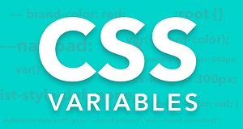

. . .
By Craig Buckler
Optimizing Css for faster page load
Even in 2021, web performance remains a problem. According to HTTP Archive, the average page requires a 2 MB download, makes more than 60 HTTP requests, and can take 18 seconds to load on a mobile device fully. Stylesheets account for 60 kB split over seven requests, so it’s rarely a top priority when attempting to address performance issues. However, CSS does have an effect, however slight it may seem. Once you’ve addressed your JavaScript, learning to optimize CSS properly should be the next priority. CSS can scope styles to particular conditions with media queries. Media queries are important for a responsive web design and help us optimize a critical rendering path. The browser blocks rendering until it parses all of these styles but will not block rendering on styles it knows it will not use, such the print stylesheets. By splitting the CSS into multiple files based on media queries, you can prevent render blocking during download of unused CSS. To create a non-blocking CSS link, move the not-immediately used styles, such as print styles, into separate file, add a to the HTML mark up, and add a media query, in this case stating it's a print stylesheet. It can be difficult to identify styles that are no longer used, and removing the wrong ones can wreak havoc on a site. Developers typically opt for the safest “retain everything” approach. Page styles, components, and widgets that are no longer used continue to exist in CSS. The result? The file size, complexity, and maintenance effort increase exponentially, making developers less and less likely to remove redundant code.
CSS blocks render. CSS impacts the appearance of everything on your website, including fonts and page layouts. This means, your browser will prioritize your CSS in order to paint the page. So if CSS is incorrectly or not at all optimized, your users will either get a slow-loading web page, a page with large portions of it missing, or a completely blank page. CSS files grow. Since any part of the code can affect key style choices on the website, developers usually tend to retain everything. Plus, it's generally difficult to find styles that are no longer in use. This means, even with changes, redundant and old code still remains. This includes page styles, components, widgets, etc., that are no longer required. Eventually, the file reaches a point at which its size and complexity intimidate even the most seasoned developers, and maintaining it becomes a huge, challenging project that never gets done. Large CSS files delay website display. Large stylesheets take longer to be downloaded and processed, blocking the browser and JavaScript APIs from displaying your page. Linked CSS files block processing. Stylesheets can reference other stylesheets and assets like fonts and images. This means, the processing of one stylesheet can be interrupted to load other stylesheets, further slowing down the website. CSS hinders interactivity. Since CSS is prioritized when loading a page, it stops the parsing of HTML while being processed. This means the longer it takes for the CSS to parse, the longer other critical resources like JavaScript functionality take to load. This increases the time to interactivity, meaning the user cannot interact until all the CSS components are fully displayed.
More Article
Front-End . 1 Month ago
Css Grid
The CSS Grid layout Module offers a grid-based layout system, with rows and columns, making it easier to design web pages without having to use floats and positioning.
12 Min Read
Read More
Front-End . 2 Month ago
Color in css
Color play a vital role in making web page usable or not, in Css we can control foreground and background color of an element with color and background properties.
8 Min Read
Read More
